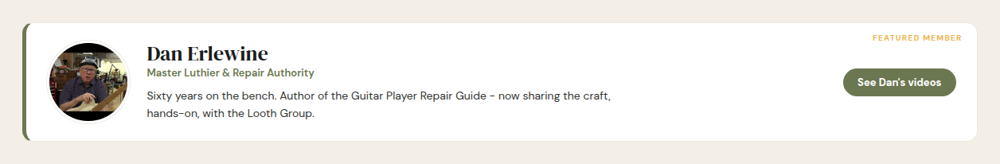
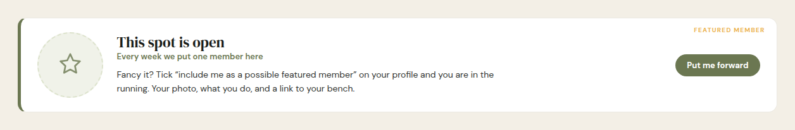
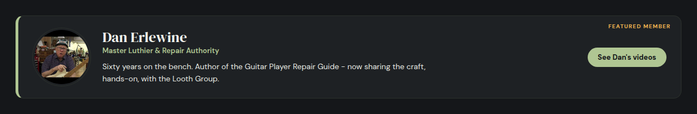
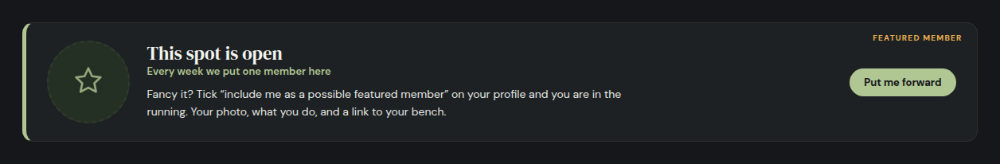
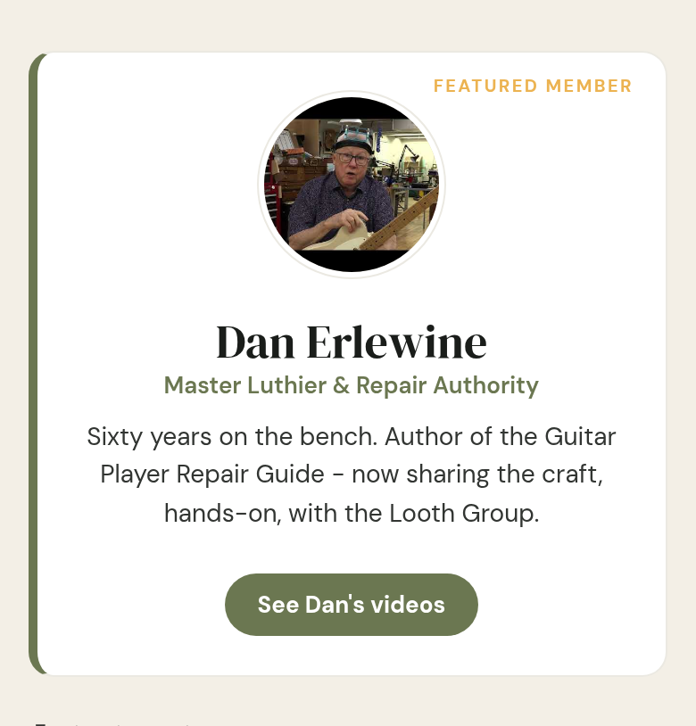
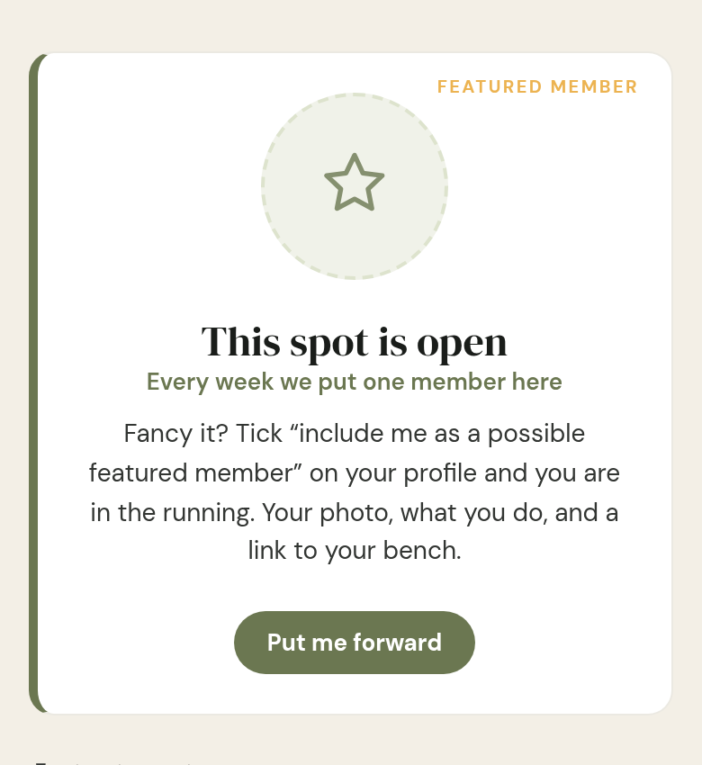
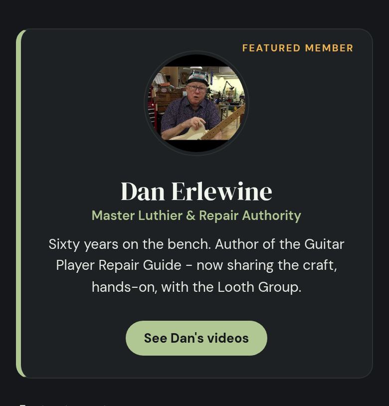
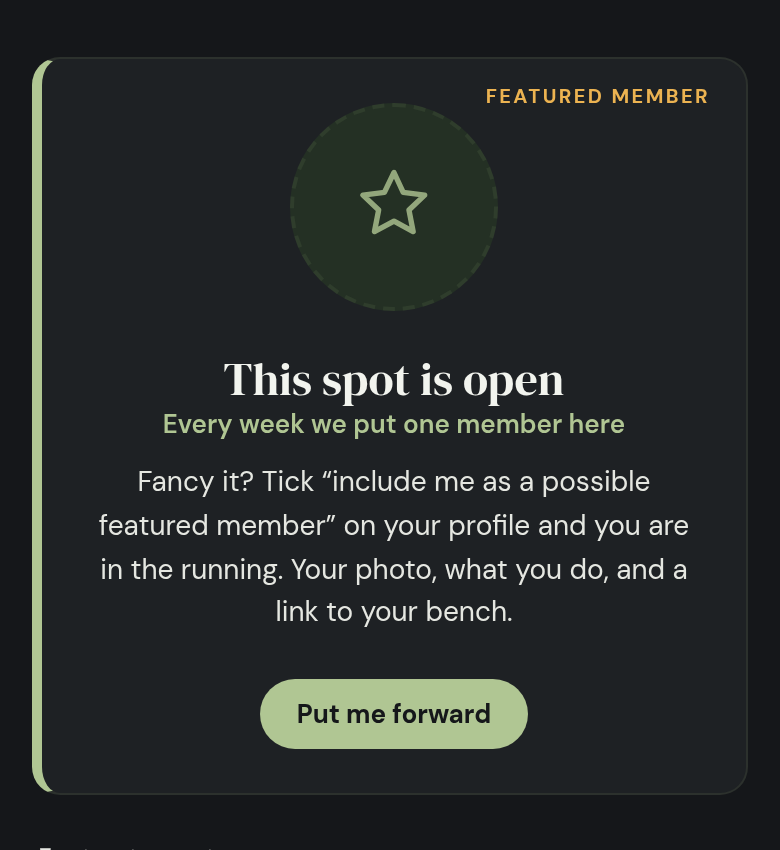

You picked this one: “B is fine for featured. We haven’t even announced it as a feature.” Here it is on the real front page — not a drawing. Every picture below is the actual page, rendered from the new code, in both colour schemes, on desktop and on a phone.
Top of each pair is what was there before: a real person’s card, frozen since June, still saying “featured member” about someone featured three months ago. Below it is the new one.
Before — light · desktop

Now — light · desktop

Before — dark · desktop

Now — dark · desktop

Same two cards at phone width, both colour schemes.




These are the complete front pages the pictures were taken from, so you can scroll the band in place rather than trust a crop. Your own colour scheme applies.
One thing I found by clicking it, and fixed.
The drawing had the Put me forward button going nowhere — in a mock a button never has to work, so nobody had pressed it. On the real page it was pointing at an address that gives a “not found” page. It now takes you to your own profile, which is where the tick box lives. Signed out, it asks you to sign in first and then brings you straight back. A dead button on the front page would have been worse than the empty space it replaced.